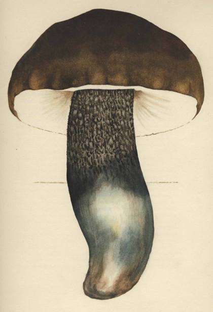
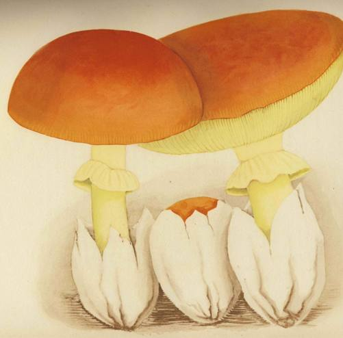
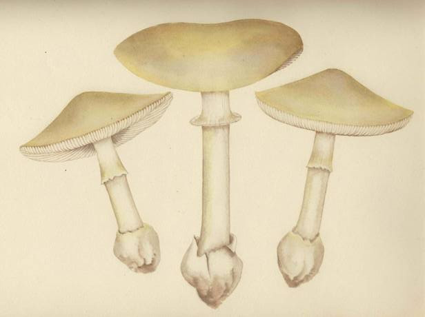
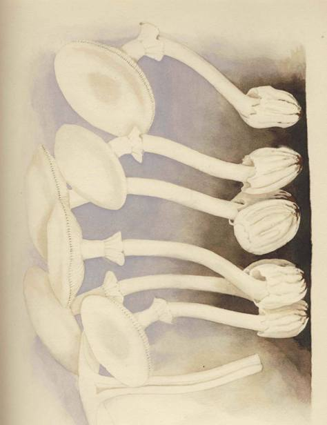

The victim goes about his affairs blissfully unaware that the fingers of death
already entwine him. Perhaps he speaks with relish of the mushrooms he has
eaten, even returning to another dish of the same kind at the next meal. If they
have been served to him intentionally, his murderer, standing by, eyes him with
wicked and dissembled solicitude, alert for the inevitable moment. Of a sudden
the victim is gripped by appalling abdominal distress, followed by vomiting
and diarrhoea fcetida. Neither emetics nor purgatives can help him now, for his
system has absorbed the venom, during the long period of silent invasion.
The initial seizure is followed by utter prostration, which in turn is succeeded
by another paroxysm like the first, and this alternation continues, perhaps for
many days, until the victim, his pulse fast and weak, succumbs, usually after
a delirious phase. The appearance of the patient meanwhile is marked by what
the physicians describe as the Hippocratic facies - eyes sunken and staring as
though with anxiety or even terror, skin over the cheekbones taut and parched,
nose pinched, temples hollow, ears leaden and cold, their lobes turned out,
lips relaxed, the whole face livid - an appearance that is clear harbinger of
imminent dissolution.
Our lugubrious, even sinister, approach to the toxic fungi presents the ele-
mentary facts that should be known to any detective story craftsman who re-
sorts to mushroom poison as a device in the construction of a plot. The art of
the detective story is a minor literary genre proliferated by the English-speak-
ing peoples. Its leading exponents are often conscientious in their scientific
research. But when they invoke mushroom poisoning, they seem incapable of
artistic performance, as though the mycophobia peculiar to the Celtic and
Anglo-Saxon races inhibited all inquiry into the dark recesses of the repellent
subject. Mushrooms remain a mystery even to mystery writers.
Before examining the texts, we must mention two other kinds of toxic mush-
rooms. First and foremost there is the amanita muscaria, erroneously regarded
by many laymen as the poisonous mushroom. Its evil reputation far outruns its
deserts. It gives its name to 'muscarine', the agent that most physicians and even
medical examiners in the English-speaking world regard as synonymous with
mushroom poisoning. But the facts are that muscarine is seldom if ever fatal,
that it is destroyed by cooking, and that it exists in the amanita muscaria only
in traces, being much stronger in the amanita pantherina. The hallucinations and
muscular exertions inspired by the amanita muscaria, followed by a period of
stupor, are attributable to the presence of a wholly different compound, which
resembles atropin. The victim (or beneficiary) of this intoxicating mushroom
PLATE VIII Jean-Henri
Fabre. Boletus duriusculus Kalchbr.

MUSHROOMS FOR MURDERERS
is imbued with a new sense of dimensions, of physical powers, of miraculous
mobility.
Of the remaining toxic mushrooms, there is a peculiar mystery about the
gyromitra esculenta, a common species much eaten (as its name suggests) in
Europe. Certain it is that at intervals cases occur where an individual dies from
it. The explanation may not yet be surely known, but if the best opinion avail-
able today proves right, the gyromitra esculenta offers us a notable fungal
peculiarity. It seems that everyone may eat this tasty mushroom with impunity
for the first time. But there are rare individuals who, if they return to a mess of
the same species shortly thereafter, and if the mushrooms are fresh rather than
dried, suffer a dangerous and even fatal anaphylactic shock.
Dorothy L. Sayers with Robert Eustace in The Documents in the Case produced
the supreme example in English of a mystery story based on fungal poisoning.
An eccentric Englishman, George Harrison, made wild mushrooms his hobby
(he was obviously eccentric), and in the end was found dead (as normal Eng-
lishmen would expect) in a lonely shack. The evidence indicated that he had
recently eaten a mess of stewed mushrooms prepared by himself. The coroner
after chemical analysis of the uneaten remains of the stew put the death down
to accidental muscarine poisoning. The victim's son, Paul, was not satisfied, be-
cause he was certain his father, a careful man and excellent amateur mycologist,
could never have confused the amanita muscaria with an edible species, and in
the end he ran down the real culprit, a lover of Paul's step-mother, a villain
named Robert Lathom, who in due course was proved to have introduced
synthetic muscarine into the stock that had served for the mushroom stew. He
was tried, convicted, and hanged. The story is well told, with delightful touches
revealing the mycophobic habits of mind of the run of Englishmen. But it suf-
fers from one defect: muscarine is destroyed by cooking and could not have
caused the victim's death. True, the muscarine here involved is synthetic, but
no evidence is produced to show that, in resistance to heat, the synthetic product
differs from the natural. Furthermore, the toxicity of fresh muscarine is exag-
gerated: the chances were excellent that Harrison would survive an uncooked
dose. Lathom should have used amanitine, not muscarine - the amanita phal-
loides, not the amanita muscaria - and for informed readers, his execution was
a painful miscarriage of justice, a tragic sequel to an incompetent performance
by Defense Counsel.
Miss Sayers and Mr. Eustace used, or misused, a genuine mushroom. More
often English authors create fictional species, tailored to fit their plots. Ernest
Bramah in The Eyes of Max Carrados tells a story entitled 'The Mystery of the
49
Poisoned Dish of Mushrooms'. It hinges on the peculiar properties of a non-
existent fungus on which he bestows a name unknown to mycology, the amanita
bhuroides. (This name sounds like a misspelled derivative of Burrhus, a perso-
nage in attendance at the imperial court of Claudius and Nero.) It is so deadly
that the victim expires within a half-hour of his seizure.
More remarkable than the amanita bhuroides is the panseolus sherriffoides, as we
shall call the mushroom that the playwright R. C. Sherriff devises for his drama
Miss Mabel. His plot is unhappy, for we are expected to sympathize with a
kindly, somewhat demented heroine who poisons her wealthy and hateful
sister, the widow Fletcher. The mycophile watches with astonishment as the
author, by a very act of creation, invents his mushroom and clothes it with
precisely those attributes that the plot requires. It appears in the spring: the
daffodils are in bloom and Easter is yet to come. (In nature there are almost no
mushrooms then.) It grows fast, progressing noticeably in the course of a night's
rain. A cluster of nine serves as the lethal dose, but the playwright suggests that
fewer would have sufficed. When cooked, these mushrooms smell like hot
rubber, but the smell is successfully overlaid with onions and tomatoes. Most
remarkable are the toxic properties. These fungi are a powerful narcotic and
put the victim to sleep at once. The widow Fletcher departs this life without
pain, her ugly, resentful face assuming in death 'a look of such peace and gentle-
ness' that the audience is presumably reconciled to her hurried departure at the
hands of her sister.
Yet another inventor of mushrooms is H. G. Wells, in his short story, The
Purple Pileus. Here a mild-mannered, milktoast of a man named Coombes,
lower middle-class, finds himself browbeaten by his wife and her odious friend,
Clarence, to the point of desperation and suicide. He rushes from the house into
the woods. He thinks of drowning himself, but suddenly notices all the varied
mushrooms around his feet. A purple pileus catches his eye, "a peculiarly poiso-
nous looking purple", slimy, shining, emitting a sour odor but not disgusting.
Coombes breaks off a piece, and the creamy white of the inside changes in ten
seconds to a yellowish-green color. He remembers that his father had described
this very species to him, and they were the deadliest poison. He tastes the thing.
It is pungent and he almost spits it out, but then it seems merely hot to the taste
and full-flavored, a kind of German mustard with horse-radish. He swallows it.
There ensues a curious tingling sensation in his finger-tips and toes. His pulse
quickens. The blood in his ears sounds like a mill-race. He loses his balance and
falls, and forgets everything. While he lies there unconscious, a peculiar transfor-
mation takes place in his personality, for after a while he wakes up feeling bright
50
MUSHROOMS FOR MURDERERS
and cheerful, his complexion a livid white, his eyes large and bright, his pale
lips drawn in a cheerless grin. The mild little man is now a lion, fit to be the
master of his house. He goes home, and in a scene of violent retribution he im-
poses his will on his wife and that noisome friend of hers. He is so successful
that the reformation in his household proves lasting, and the whole course of
Coombes's life is changed for the better.
Coombes's violence might suggest that he ate the amanita muscaria, but
Wells expressly distinguishes his purple pileus from that other species, "the red
ones with white spots". Furthermore, the fly agaric produces a sleepy stupor
after the spell of exhilaration, not before it. Wells, like Bramah and Sherriff,
fills out the necessities of a given plot by inventing the needed mushroom, on
which we here bestow the name of boletus wellsoides.
Have English authors ever invented flowers or bushes or trees with which to
adorn the English countryside? It seems unlikely. Surrounded by mushrooms
that they never truly see, they usually ignore them, and on the rare occasions
when 'toadstools' are needed, they blithely misrepresent them, to make them
serve an odious or exotic purpose.
With Wells and Sherriff and Bramah, we observe a peculiar aspect of the my-
cophobia of the English in its unconscious and spontaneous workings. Doubt-
less many other examples could be assembled, and we shall mention a few. But
first let us note and celebrate one exception. Anne Parrish in her novel The
Perennial Bachelor dispatches one of her characters by means of a dish of mush-
rooms. Unlike ah1 the other writers about whom we speak, she shows herself
thoroughly versed in the properties of the deadly amanita. The episode is only
incidental to her plot, and this makes the accuracy of her details even more
astounding. It is not as though she had worked hard on mushrooms in order
to hang her story on them.
In December 1949 Ellery Queen s Mystery Magazine published a yarn by
August Derleth in which the murderer killed his victim by substituting for
morels some specimens of the gyromitra esculenta - a species that no villain
bent on murder would ever rely on. In Murder with Mushrooms, Gordon Ashe
has his victim die the same night that he dines on poisonous mushrooms -
a tragic sequel that could not occur. In R. T. M. Scott's Ann's Crime, the victims
inhale spores of the amanita phalloides that have been concealed in a cheese cloth
inside a pillow, and forthwith they die, for no doctor, we are told, could save a
person whose head had once touched that pillow! . . . Has there been a single
writer of detective or mystery stories who has done justice to the genuine
drama hidden in the properties peculiar to the amanita phalloides; The German
51
author Gustav Meyrink in his Bal Macabre deals with mushroom intoxication.
The story is drenched with a pathological atmosphere artfully contrived. There
is much about mushrooms in the narrative, but the hallucinations that hang over
the whole story seem to us to be best explained by the effects of alcohol, an
alcoholic's nightmare about toxic mushrooms. Meyrink reveals no knowledge
of fungal toxicology. The prolific American writer Percival Wilde in his
Tinsley's Bones, published in 1942, introduces as a witness a knowledgeable
female mycologist who seems to be addicted to mushrooms of the genus panaeo-
lus as a substitute for cocktails, the author and his character displaying thereby
an astonishing command of mushroomic esoterica; but mushrooms in this yarn
were not the agent used for the murder.
The facts about lethal mushrooms are to be found, not in standard medical
reference works, but in mycological publications. They are well summarized in
John Ramsbottom's A Handbook of the Larger British Fungi, an indispensable
reference book, which however still characterizes the amanita mappa (i. e., ci-
trina) as poisonous, ignoring the work done by the French with this species.
Good case histories in English of poisoning by the deadly amanitas appear in a
Canadian Government publication, Mushrooms and Toadstools, by H. T. Gtissow
and W. S. Odell. Certainly the best worked up case history in any language
is the account of the tragic end of a Madame Boyer and her daughter Elodie,
more than a century ago, retold with dramatic suspense and pathos by Camille
Fauvel in his delightful little book, Le Champignon aui tue, published in Paris in
1926. The best single source of information about all the toxic mushrooms is,
we believe, Les Champignons Toxiques (Paris, 1938), compiled jointly by Dr. R.
Dujarric de la Riviere of the Pasteur Institute, and the mycologist Professor
Roger Heim. Dr. Dujarric de la Riviere's promising efforts to produce an anti-
toxin for the deadly amanita were interrupted by the second World War, and
intravenous injections of glucose are the only readily accessible palliative avail-
able to physicians today.
Mycologists are prone to exaggerate the importance of mushroom poisonings
in history. In their writings we repeatedly find a list of eminent persons who have
died allegedly from eating poisonous mushrooms, a list that they copy from each
other without verification. Sometimes we read that Euripides lost his wife and
two daughters thus, an assertion unsupported by any ancient text, apparently
based on a misreading of Athenaeus. We read that Pope Clement VII - he who
is remembered chiefly for his troubles with Henry VIII of England - was a
victim of poisonous mushrooms. This Pontiff died on September 25, 1534. The
52
MUSHROOMS FOR MURDERERS
date falls in the season of the deadly amanita, but the records show that Cle-
ment's symptoms first manifested themselves many months earlier, on May 30,
and the course of his fluctuating illness from that moment is well documented.
We discover in the record no trace of the telltale stigmata. As his biographer
Emmanuel Rodocanachi wisely observes, "In accordance with the custom of
those times, people attributed his death to poison."1
More remarkable still is the persistence in mycological writings of the asser-
tion that Tsar Alexis of Russia or his widow died from mushrooms. Sometimes
the texts name him, but more often her. As to the Tsar himself, the circumstances
of his death are well known and are unrelated to fungi. His widow was an out-
standing woman, the mother of Peter the Great, Natalija Naryshkina by name.
She died on January 25,1694 (Russian style), after an illness of five days. Neither
contemporary records nor the historians of the period tell us the nature of her
ailment. If mushrooms were the cause, they must have been dried or pickled spe-
cimens from the previous autumn. What has given rise to the tradition among
mycologists that mushrooms brought about her end ? We believe the source is to
be found in a footnote that appears on page in of Jean-Jacques Paulet's classic
Traits, des Champignons, published in Paris in 1793, reading as follows:
L'accident arrive a la veuve du czar Alexis, qui s'empoisonna avec des champignons
qu'on avait gardes pour le careme, et rapporte par Miiller, est de notre siecle.
The accident that befell the widow of the Tsar Alexis, who was poisoned by mush-
rooms that had been set aside for Lent, as reported by Miiller, belongs to our century.
The Miiller to whom reference is made can only be Gerhard Friedrich Miiller,
a prolific i8th century writer about Russia who died in 1783. But his numerous
works available to us make no mention of the death of Natahja Naryshkina,
and Paulet's footnote remains uncorroborated.
Finally there was the case of the German Emperor Charles VI, father of
Maria Theresa of Austria. He had been worried and run down. "On the loth
[of October] at night his complaint was increased by an indigestion, occasioned
by a dish of mushrooms stewed in oil, of which he eat voraciously". So wrote
that admirable man Archdeacon William Coxe, the same whom we quoted
earlier, in his History of the House of Austria. Ten days later, on October 20, while
the doctors were still arguing about the diagnosis, he surprised them by dying.
The clinical details that Coxe supplies to us, including the patient's sudden death,
I. Histoire de Rome: Les Pontificals d'Adrien VI et de Clement VII, Librairie Hachette, Paris, 1933. See also Ludwig
Pastor, The History of the Popes, London, 1910, vol. 10.
53
are compatible with poisoning by the deadly amanita. There were no allegations
that the poisoning, if such it was, was deliberate. If fungi were the agent, he
is the one modern personage thus killed. His end precipitated war and Voltaire
declared that "a pot of mushrooms changed the history of Europe".
So much for the famous men and women whose deaths have been attributed
rightly or wrongly to mushrooms. This mortuary procession of alleged mush-
roomie victims would be incomplete if we did not here add the murders revealed
by 1'afFaire Girard. In this case, the victims were persons of no consequence:
their very names are forgotten. But the circumstances that brought them to
their deaths are, for mycophiles and epicures of crime, both instructive and
fascinating.
The standard mushroom manuals of France, like those of England, have
always been saturated with mycophobic caution. By overstating the toxic
dangers of various species, they have aimed at assuring the safety of their readers.
But, through a strange conjuncture of events, that very bias once contributed
to the disastrous end of a man who trusted his mushroom manual too much.
This is the lesson to be learned from Faffaire Girard.
Girard's murders would doubtless have drawn wide attention if the press
stories had not broken at the precise moment of the great spring offensive of
1918, the final year of the first World War. Girard was a Parisian, and his
accomplices were his wife and his mistress. He murdered only his friends, after
insuring their lives in his own favor. Poisons were his instrument, and among
other poisons he used toadstools gathered for him in the forest of Rambouillet
by an old hobo known as le pere Theo, whose testimony later was damning to the
accused. From time to time Girard would order from Theo a mess of amanitas:
they had to have white gills, veil, and volva - the stigmata of the deadly ama-
nita, but also of the amanita mappa or citrina. Girard and his wife would serve
these fungi to their victims at sumptuous dinners in their own apartment.
Sometimes the guest went home and died, but on other occasions, doubtless
to the surprise and discomfiture of the Girards, the intended victim suffered no
ill effects whatever! Indeed, a number of them lived to give their evidence to
the police.
In 1918 the standard mushroom manual of France was Paul Dumee's. Like
all of the over-cautious manuals of that time, it condemned the amanita citrina
as deadly. Girard had not thought it necessary, therefore, to distinguish the two
amanitas when instructing old Theo about the mushrooms to gather. Thus it
came about that when Theo brought in a mess of the amanita phalloides, the
victim would enjoy a dish of tasty mushrooms and later die. But when Theo
54
MUSHROOMS FOR MURDERERS
produced specimens of the innocent amanita citrina, the intended victim must
have found them a little unpleasant to the taste, and that was the end of the matter.
For the deadly amanita makes a delectable dish, whereas its relative the innocent
citrina scarcely rises palate-wise to the mediocre level.
Thus it may be said that Girard was deceived and misled by Dumee's over-
cautious manual, with the result that some of his friends and intended victims
unwittingly survived his honest efforts to do them in, and he in turn was fatally
entangled in the law's toils. Now that the French manuals have improved,
Girard's mistake is unlikely to be repeated. Had Girard hailed from Serignan,
Henri Fabre's village in the Provence, he would have known from childhood
not to rely on Dumee, for these peasants need no manuals.
Girard's crimes would have been forgotten, had it not happened that Camille
Fauvel, that prodigious mycophile, was a Commissaire de Police in Paris at the
time, and though he was not handling the Girard case, having lately been charged
with the more famous and important but less interesting Mata Hari dossier,
he followed it with expert attention, even interviewing Girard in Fresnes prison
after the conviction, in the interests of mycological lore. Fauvel published an
admirable narrative of the affair many years later, in the Supplement to the issues
of June and August, 1936, of the Revue de Mycologie, and we have drawn our
facts from his account. It should be added that Girard died in his prison bed of
tuberculosis a few days after he was interviewed, never having admitted his
guilt nor that he had relied on the unsound advice of Dumee. But Fauvel's
inference is based upon evidence that leaves little room for doubt.
All that we have set forth in this chapter up to now - the description of
the singular properties of lethal mushrooms, the inadequacy of mystery writers
when they deal with this theme, our comments on alleged poisonings of eminent
personages and the niushroomic murders of unimportant folk-has had only one
purpose: to equip the reader for a reconsideration of the death of the Emperor
Claudius in A.D. 54. On that occasion, for once in the course of recorded history,
the whole of a great Empire and the known world swung on a dish of mush-
rooms. The accounts in the ancient writings of that famous event are an old,
old story, familiar to all students of antiquity. Those texts have been parsed by
students, dissected by historians, pondered by moralists for close on to twenty
centuries. It would seem that by now every conceivable interpretation must
have been hit upon, and the resources of scholarly inquiry exhausted. Indeed,
the signs of exhaustion are not lacking: in our own generation Guglielmo
Ferrero in his The Women of the Ccesars has not only struggled to exonerate
55
Agrippina of the dreadful charge laid at her door, but to portray her as a noble
Roman matron!
It would be surprising if at this late date fresh evidence shedding light on Clau-
dius's death were discovered, and yet this is what we think we have done. We
rely solely on the same worn texts, and we entrust our fate to the verdict of
scholars far more learned than we. Perhaps those old texts have a message to
deliver to us that can be discerned only by one who is a lover of mushrooms,
a physician, and above all an amateur of venomy - amateur in the sense of a
critical but passive observer of those who have practiced that subtile art.
Let us recall the background of the crime. Claudius succeeded Caligula as
emperor in the year 41, at the age of 51. By his third wife, Messalina, he had had
a son, Britannicus, born the year before his accession. After executing Messa-
lina for adultery, he married his niece Agrippina, who by a previous marriage
had a son of her own, three years senior to Britannicus; and her son was destined
to worldly immortality as the Emperor Nero. Indeed, Agrippina's motive in
murdering her husband was to assure the succession to Nero, in which endeavor
success crowned her efforts. Claudius at the time of his death was said to be
favoring Britannicus, and it was even rumored that he had bequeathed the Empire
to Britannicus in a will that Agrippina destroyed.
The young man who was to be known as Nero had as his tutor from A.D. 50
on the famous Seneca, and at the time of the crime Seneca was an intimate of
the imperial circle, privy to all that went on. He could have left us an eye-witness
account of what happened, but instead he veils his remarks in satire - a prudent
evasion of one who undoubtedly knew too much. Three of the ancient historians
have given us accounts of the event. Tacitus, who was probably born in the year
after Claudius's death, wrote his narrative about sixty years later; Suetonius's
version came a few years after that; and Dio Cassius told the story again almost
two centuries after the event. These three secondary sources differ among them-
selves in details, which gives to their agreement on essentials a stamp of veri-
similitude. In the main they were not copying each other, and they probably
had the important facts right.
Claudius was exceedingly fond of mushrooms (boleti), and a plausible tradition
has it that his favorite kind was what we know today as the amanita caesarea.
The dish of mushrooms that he ate on the fateful day consisted of poisoned, not
poisonous, mushrooms. On this all three of the ancient historians agree, in dif-
ferent words. None identifies the poison that was used, but they are abundantly
clear that poison was added to the Emperor's favorite dish. Here is Tacitus, Book
XII, Chap. Ixvii of the Annals in the Loeb edition:
56
PLATE IX
Jean-Henri Fabre. Arnanita csesarea Fr. ex Scop.
French: orange; Italian: ovolo.

M U S H R O O M S F O R M U R D E R E R S
Adeoque cuncta mox pernotuere, ut temporum illorum scriptores prodiderint infusum
delectabili cibo boleto venenum.
So notorius, later, were the whole proceedings that authors of the period have recorded
that the poison was sprinkled on an exceptionally fine mushroom.
Suetonius gives alternative versions, in Book V, Chap, xliv, in the Loeb edition:
Et veneno quidem occisum convenit; ubi autem et per quern dato, discrepat. Quidam
tradunt epulanti in arce cum sacerdotibus per Halotum spadonem prsegustatorem; alii
domestico convivio per ipsam Agrippinam, quae boletum medicatum avidissimo ciborum
talium optulerat.
That Claudius was poisoned is the general belief, but when it was done and by whom
is disputed. Some say that it was his taster, the eunuch Halotus, as he was banqueting on
the Citadel with the priests; others that at a family dinner Agrippina served the drug to
him with her own hand in mushrooms, a dish of which he was extravagantly fond.
Suetonius places the poisoned mushrooms only in his second version, but mush-
rooms could have been the vehicle that Halotus used too, and this may be im-
plied. Dio Cassius comes down to us in a Greek summary. In Book LXI he
accuses Agrippina of having put the poison into "one of the vegetables called
mushrooms", using for mushroom the Greek word μύκης. A few pages later
Dio Cassius refers again to the same poison when he says:
Agrippina was ever ready to attempt the most daring undertakings; for example, she
caused the death of Marcus Junius Silanus, sending him some of the poison with which
she had treacherously murdered her husband.
What poison did Agrippina use? We think the answer is clear. She turned for
advice and aid to a woman named Locusta, an experienced artist in the prepa-
ration of poisons, as Tacitus tells us; a famous dealer in poisons, as Dio Cassius
puts it. According to Tacitus, the instructions of the Empress to Locusta were
narrowly defined. The poison was not to be sudden and instantaneous in its
operation, lest the desperate achievement should be discovered. On the other
hand, if the effect were slow and consuming, Claudius as his end approached
might discover the treachery and take steps to thwart the perpetrators in their
ultimate purposes. (He might, that is to say, proclaim Britannicus as his heir.)
Something subtle was needed, which would take time but also deprive the victim
of his faculties. As Tacitus goes on to say, by Locusta's skill the desired poison
was prepared. This passage in the Annals of Tacitus being a crux in our argument,
we give it in full:
57
C H A P T E R F O U R
Turn Agrippina sceleris olim certa et oblatas occasionis propera nee ministrorum egens,
de genere veneni consultavit, ne repentino et praecipiti facinus proderetur; si lentum et
tabidum delegisset, ne admotus supremis Claudius et dolo intellecto ad amorem filii re-
diret. Exquisitum aliquid placebat, quod turbaret mentem et mortem differret.
It was then that Agrippina, long since bent upon the impious deed, and eagerly seizing
the present occasion, well furnished too as she was with wicked agents, deliberated upon
the nature of the poison she would use, whether, "if it were sudden and instantaneous in
its operation, the desperate achievement would not be brought to light: if she chose ma-
terials slow and consuming in their operation, whether Claudius, when his end approached,
and perhaps having discovered the treachery, would not resume his affection for his son."
Something of a subtle nature was therefore resolved upon, "such as would disorder his
brain and require time to kill." [Oxford translation, Annals, Book xn, Chap. 66]
There was only one poison available to the ancients that would fulfill Agrip-
pina's requirements - the poison of the deadly anianita. The victim would not
give away the game by any abnormal indisposition at the meal, but when the
seizure came, he would be so severely stricken that thereafter he would no longer
be in command of his own affairs. For one familiar with the properties of the
amanita phalloides the text in Tacitus seems transparently clear. But for others
than mycophiles there might remain a doubt: is it legitimate for us to infer that
Locusta knew the deadly amanita and its secret virtue to which even now, after
nineteen centuries, few are privy?
This question troubled and challenged us, not because we were uncertain
but because it would be hard to carry conviction with an uninitiated public.
Once more we reviewed all the principal sources, all the stray allusions in the
classical writers. We concentrated especially on Seneca. After all, he was a wit-
ness whose testimony would have been competent in our own courts of justice;
he was articulate, and had he not carried the secret etched sharp in his memory
from that fateful October day in A.D. 54 until his death eleven years later?
Somewhere, if only by inadvertence, he must have talked, and perhaps his reveal-
ing words had survived, their esoteric meaning hitherto unperceived. We
embarked on a reading of ah1 his extant writings. We began with his later works,
composed after the death of the Emperor, and tried to orient each sentence
toward that event. Suddenly one day we came upon the tell-tale phrase: it
leaped at us from the page, fairly shouting at us. Yes, whether with sly intention
or by inadvertence, Seneca had blurted out the fateful secret, imparting it to
all knowing readers. And before us not a single commentator had ever caught
the inner meaning of the plain words.
We refer the reader to Letter xcv that the old Stoic wrote to his friend Luci-
58
MUSHROOMS FOR MURDERERS
lius nine or ten years after the death of the Emperor and one or two years before
he took his own life on Nero's orders. In it he describes and deplores the excesses
of the Roman upper class. He refers to the late Emperor's gluttony:
Di boni, quantum hominum unus venter exercet! Quid 2 Tu illos boletos, voluptarium
venenum, nihil occulti operis iudicas facere, etiam si prsesentanei non fuerunt.
Good gods! What a number of men does one belly employ! But can you think those
mushrooms (a tasty poison) do not secretly and gradually operate, though no bad effect is
immediately perceived from them ? [Loeb translation]
Here is proof that Seneca knew the amanita phalloides. The period of silent
invasion, that veritable signature of the lethal mushroom, was familiar to him,
and he even took pains to mention how tasty the wicked mushroom was! How
much guilty knowledge packed into a few words! Read in conjunction with
the Empress Agrippina's instructions to Locusta, we believe it clinches our
case. The poison in the dish of Caesar's amanitas was the poison of the deadly
amanita. Two of our authors, Suetonius and Tacitus, give us grounds for sup-
posing that the administration of the poison was entrusted to the eunuch Halotus,
whose office it was to taste the Emperor's food before serving it to him. Tacitus
says that Halotus poured the poison into the dish of mushrooms. It would have
been easy for Locusta to prepare a sauce from the deadly specimens, and by
enlisting the aid of Halotus, no suspicion would be aroused by the failure to
serve it to others at the feast. However, this is a detail, important at the time
to the participants of course, but secondary to the primary fact that the ancient
writers are telling us exactly how Locusta handled the assignment with which
Agrippina charged her. We believe that the secret of those two fearless and
wicked women is withheld from us no longer. (For Latinists and mycologists
it is interesting to note that Seneca uses the word boletus for the deadly amanita:
it was clearly the term for all amanitas, not merely the amanita cassarea.)
We rest our case on the knowledge shown by Seneca and the quoted passage
from Tacitus, taken together. But there is additional circumstantial evidence
compatible with our theory. The crime was committed on October 12 - in the
season when the deadly amanita could be easily found around Rome. On the
morrow after Claudius had eaten the mushrooms and while he was yet alive,
comedians were introduced into his presence to solace and delight him, as Sue-
tonius says. Since any such kind intention was foreign to Agrippina's nature,
and a fortiori at the dreadful moment that we are considering, we may assume
that her purpose was different: the comic actors were to bear witness in the public
market-place that the Emperor had not been killed but was in truth desperately
59
ill, and the Hippocratic facies that we know he must have manifested gave them
full warranty for such a report. Immediately after Claudius's death, he was pro-
claimed a god-a posthumous honor for emperors to which Romans were accus-
tomed. Afterwards, when Nero was in secure possession of his imperial office,
he was present at a certain banquet where mushrooms were brought in, and
someone remarked that they were the gods' food, cibus deorum. To this Nero is
said to have replied: "True enough: my father was made a god by eating a
mushroom." (This story is told by Suetonius, Dio Cassius, and Petrus Patricius.)
Nero's remark is more apt if he was referring to the deadly amanita, and not
merely to a dish of edible mushrooms that had been poisoned; and Nero was
in a position to know.
In spite of Locusta's artistry, we know that her bold stroke was botched, and
this leads us to the second part of the crime. The time schedule alone tells us
that something went awry. Claudius sat down to his fatal banquet at about
2.30 p.m. on October 12. At or shortly after noon the next day he was dead.
The lethal amanitas do not kill so quickly. We do not know at what stage in
the lengthy banquet he ate his mushrooms, but probably not at the beginning.
His seizure could not have taken place before 9 p.m., and probably not before
midnight or later, which would mean that his agony lasted only twelve hours!
On its face this is impossible. We pointed out earlier that, for a murderer, the
amanita phalloides labors under one defect: occasionally a victim recovers.
Agrippina could not afford this risk, and even if we had no evidence to support
our theory, we might assume that she and Locusta, as their imperial patient lay
at their mercy, resorted to direct methods to dispatch him. Fortunately, our
texts come to our help.
"The victim of the plot," says Dio Cassius, "was carried from the banquet
apparently quite overcome by strong drink, a thing that had happened many
times before." Suetonius's version is hesitant: "Of those accidents also which
ensued hereupon [after eating the mushrooms] the report is variable. Some say
that straight upon the receipt of the poison he became speechless, and continuing
all night in dolorous torments died a little before day. Others affirm that at first
he fell asleep, and afterwards, as the meat flowed and floated aloft, vomited all
up." (If it is true that in his usual drunken stupor he threw up, this was enough
to send the two women into a panic, for he might have rid himself of the fungal
poison!) Tacitus is explicit: "Agrippina therefore became dismayed; but as her
life was at stake, she thought little of the odium of her present proceedings, and
called in the aid of Xenophon the physician, whom she had already implicated
in her guilty purposes. It is believed that he, as if he purposed to assist Claudius
60
PLATE X
Jean-Henri Fabre. Amanita phalloides Fr.
French: orange cigue verte.

PLATE XI
Jean-Henri Fabre. Danse Macabre. Amanita verna Fr. ex Bull.
French: orange cigue blanche.

MUSHROOMS FOR MURDERERS
in his efforts to vomit, put down his throat a feather besmeared with deadly
poison; not unaware that in desperate villainies the attempt without the deed
is perilous, while to insure the reward they must be done effectually at once."
There was thus a second poisoning, with the Greek physician Xenophon repla-
cing Locusta. Suetonius says that, according to one report, the second poisoning
was by clyster.
What was that poison to which Xenophon had hurried recourse? Robert
Graves in private correspondence offers us an answer that fits the circumstances
perfectly. Not long after Claudius's death, Seneca published a satire on the
emperor's deification to which he gave the title of Apocolocyntosis, an artificial
word telescoping apotheosis and colocynthis. The colocynth (as we call this gourd
in English) is far from being a pumpkin, and the traditional translation of this
title, the Pumpkinification of Claudius, is indeed as insipid as the classical
scholars have considered it. But if Mr. Graves is right, and we believe that he
is, the scholars have missed the point.
The colocynth is not edible. It is exceedingly bitter, whence its name, 'the
bitter gourd'. It is not native to Italy, but was imported from the arid areas
of the Near East, notably Palestine. This is the famous gourd that responded
to Elisha's miraculous powers in II Kings, Chapter 4, verses 38 to 41 :
And Elisha came againe to Gilgal, and there was a dearth in the land, and the sonnes
of the Prophets were sitting before him: and hee said unto his seruant, Set on the great
pot, and seethe pottage for the sonnes of the Prophets,
And one went out into the field to gather herbes, and found a wild vine, and gathered
thereof wilde gourds his lap full, and came and shred them into the pot of pottage: for
they knew them not.
So they poured out for the men to eat: and it came to passe as they were eating of the
pottage, that they cried out, and said, O thou man of God, there is death in the pot. And
they could not eate thereof.
But he said, Then bring meale. And he cast it into the pot: And he said, poure out for
the people, that they may eat. And there was no harme in the pot.
In minimal doses the colocynth is a violent purgative; in larger doses it is
lethal. It happens that we know the history of this drug in surprising detail.
In the first century of the Christian era the upper classes of Rome were much
concerned with their health: hypochondriasis was rampant, and miracle drugs
were being discovered one after the other.1 Early in the reign of Claudius
i. Some of the drugs used in imperial Rome have survived iii use until recent times. One such is the agaric,
and another is colocynth, this latter having been the base for 'general issue" purgative pills in the British army
in the first world war. We too, in the mid-2Oth century, are witnessing a spate of miraculous pharmaceutical
discoveries. Will a single one of them be remembered in A.D. 3850?
6l
an apothecary named Scribonius Largus enjoyed immense vogue; possibly he
attended Messalina, the mother of Britannicus and predecessor of Agrippina as
wife of the Emperor. In the middle 40'$ of that century he assembled and pub-
lished a collection of prescriptions that was destined to become famous, and
among them was a formula, or hiera, that he had discovered among the papers
of a deceased colleague, Paccius Antiochus. One of its ingredients was colocynth,
a novel drug that thereupon quickly became the rage in the upper crust of Rome,
a few years before the events that we are discussing. In the desperate extrem-
ity of that turbulent night of October 12, A.D. 54, when the Greek physician
Xenophon was called in consultation and permitted himself to become a parti-
ceps criminis, it was natural for him to come to the rescue of Locusta and Agrip-
pina by dispatching Claudius with an overdose of colocynth, administered by
mouth or clyster or both. This explains the name that Seneca gave to his satire.
Claudius's last words, as attributed to him by Seneca, were Vce me! puto, con-
cacavi me, which would be apt for either colocynth or the deadly amanita.1
If then our reading of the texts is right, Claudius was done in with a one-two
knock-out, first a dose of the deadly amanita, and then a dose of colocynth. As
a pun on 'apotheosis', the name of Seneca's satire Apocolocyntosis at last becomes
clothed with wit: the deification of an emperor is reduced to a repulsive scato-
logical metamorphosis. When, later, Agrippina did away with Marcus Junius
Silanus (as Dio Cassius tells us), it was the deadly amanita that she used, and not
colocynth; for colocynth proclaims its presence by its bitterness, and an intended
victim would spew it out forthwith.
At noon on October 13 the gates of the imperial palace in Rome swung open,
and Nero, then a youth of 17, emerged and presented himself as the new emperor
to the army detachment that was on guard there. The Emperor Claudius was
dead, or in extremis. There could have been no reason, only danger, in prolonging
the interval between the death of the old emperor and the assumption of autho-
rity by the new.
And so we bring our review of Claudius's death to an end. The three ancient
historians who tell us the story were not clinicians. Their accounts, differing
sharply in the unessential details, give us a surprisingly clear and consistent overall
clinical picture. This is circumstantial evidence of virtually conclusive weight
that they were telling the truth. They could not severally have invented a com-
bination of symptoms, and a sequence of events, that two thousand years later
would speak for themselves.
i. For information concerning the early use of colocynth in Rome, the best source is Wilhelm Schonack's
scholarly study Die Rezeptsammlung des Scribonius Largus, published in Jena in 1912.
6 2
MUSHROOMS FOR MURDERERS
Our sources say that a curtain of secrecy had shrouded the palace during the
illness of Claudius. It is tempting to try to reconstruct the scenes in the imperial
palace before and during the crime. The plot had been laid earlier in whispered
conversations between Agrippina and Locusta in some safe spot to which Lo-
custa had been furtively summoned. How stirred Locusta must have been by
her great assignment: the world offered none bigger for a person in her line of
work. Locusta, if she possessed imagination as well as art, may well have leaped
with excitement at the thought that this deed, artfully accomplished, would bring
her immortality; and indeed it has done so. But during that fateful night the
tension must have been unbearable. Had their victim foiled their efforts prema-
turely from drunkenness, by vomiting before the poisonous amanita had done
its damage? Might he survive and resume the exercise of his imperial functions?
Was Locusta vexed, her professional pride hurt, when Xenophon was called in,
or was she relieved ? With what anxious eyes Locusta and Agrippina must have
searched each other's ill-lighted faces as the hours crept on! But in any case,
with his enemies in command at his bedside, Claudius stood no chance.
The triumph of Agrippina and her fellow conspirators bestowed on them all
power. They may well have gloated in their success, and were so situated that
they could talk with a large measure of impunity. In the writings of Seneca and
the three historians, one seems to hear echoes of veiled boasting, as though Lo-
custa and Agrippina were dying to tell just how they had contrived their ends.
Their words were veiled, in homage to virtue, but thinly, and lend themselves
to understanding by the initiated, if only across a chasm of nineteen centuries.